TECHVESTVENTURES DAILY RISK ALERTS — Emergent News Digest — Nov 20, 2026, 12:20 PM EST ALL RISK REPORTS click TVV Risk Center
TVV RESEARCH DIGEST — November 20, 2026 — 13 desks
Prioritized Risk Summary November 20, 2026
| Sections Ranked for Importance Today | |
|---|---|
| TECHNOLOGY | Nvidia -7% at $135, 43% off peak; Data Center Bubble drags Anthropic back toward $83 IPO |
| STOCKS | S&P 500 slides 2% into correction territory at noon; Nasdaq -3.5% turns negative for 2026 |
| AI “BOOST” | Chip index -9%; SanDisk, Micron, AMD, CoreWeave fall 11-15%; Anthropic -13% |
| DERIVATIVES | Options expiry and short gamma: VIX 31, 3x chip ETF -27%, bitcoin below $60,000 |
| ECONOMY | Bonds the only haven: 10-year near 4.95%; Fed's Paulson still sees more hikes |
| GEOPOLITICS | Russia hits three Kyiv bridges after Shenzhen summit; Iran may test US oil blockade |
| COMMODITY | Gold futures -4% near $3,536; copper heads for worst week since April 2025 |
| PREDICTIONS | Kalshi trims December hike odds to 88%; no-change rises to 9% |
| TERROR | JPMorgan, Visa, Mastercard vendors hacked by n0n extortion group |
| HEALTH | Oregon confirms human H5 bird flu case; DRC Ebola tops 11,500 cases |
| INFRASTRUCT | Warner finds no evidence the US outage wave was an AI attack |
| SPACE | Solar cycle 25 past peak; October sunspots 46 |
| QUAKES | No qualifying deadly M6+ quake since Nov 16 |
1. Major Geopolitical Conflict Developments
- ★ Russia's retaliation for the Kerch Bridge: overnight into Friday Russia hit three Kyiv bridges across the Dnipro (Podilsko-Voskresenskyi, Darnytskyi and Southern) for the first time in a single night; Zelensky counted more than 110 missiles and 400 drones, at least eight people were killed nationwide, and nuclear plants cut output, causing outages in Kyiv and 10 regions. The barrage came hours after Putin, speaking in Shenzhen after the trilateral, promised a response "far more painful" than the Kerch strike. Al Jazeera · BBC · NBC News
- ★ Peace-track signals conflict: Kushner said Russia is "comfortable" with NATO-like security guarantees for Ukraine, the WSJ reports the US has floated NATO membership for Ukraine, and the Kremlin pushed back on the US claim (conflicting claims). Polymarket prices a ceasefire by Dec 31 at 8% and by mid-2027 at 56% (see graph). BBC · PBS · WSJ · Polymarket
- ★ Iran: Trump told Axios he is not "rushing into any decision" and may wait until the new year; the Senate again rejected a war-powers resolution 51-48. A Revolutionary Guards-affiliated outlet says Iran may resume oil exports in defiance of the US blockade, and TankerTrackers says loading appears to be under way; no Iranian official has confirmed it (unconfirmed claims). UKMTO reported a vessel off Oman struck by an "unknown projectile"; UOB counts roughly one tanker incident per day in November. Iran International · MarketDash · MarketDash · CNBC
- ★ Gulf: the Saudi-led coalition says it destroyed two Houthi drones over Riyadh and southern Saudi Arabia on Friday after Houthi missile fire at the Saudi capital. Iran International · CNBC
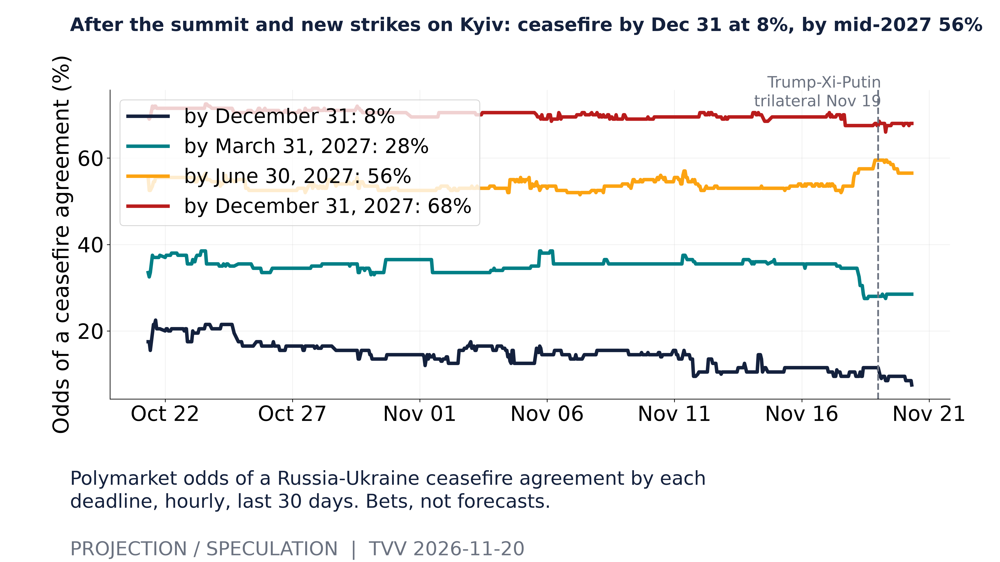
After the summit and new strikes on Kyiv: ceasefire by Dec 31 at 8%, by mid-2027 56%. Polymarket odds of a Russia-Ukraine ceasefire agreement by each deadline, hourly, last 30 days. Bets, not forecasts. [Projection/Speculation; data as of 2026-11-20 07:47 ET] Source: polymarket.com data page
2. Major Terror / Security Incidents
- ★ Bank-vendor breach: JPMorgan Chase, Visa and Mastercard confirmed cyberattacks on third-party vendors after the n0n extortion group posted data; Reuters found more than 16,000 customer emails and 124 bank-employee emails in the JPMorgan files. No payment data or card numbers were affected, and JPMorgan says the breach is unrelated to Monday's banking outage. n0n has claimed about 200 incidents since September. ABC News · Reuters via Investing.com
- ★ Exploited flaws keep coming amid the outage wave: CISA has added 56 known-exploited vulnerabilities so far in 2026Q4; none flagged for ransomware yet, and such flags usually lag (see graph). CISA KEV
- ★ Iran's Revolutionary Guards chief Ahmad Vahidi vowed revenge for recent killings, saying those responsible "would not find safety or peace"; Britain's military cyber commander publicly confirmed offensive cyber operations against Iran, Russia, China and North Korea. Iran International
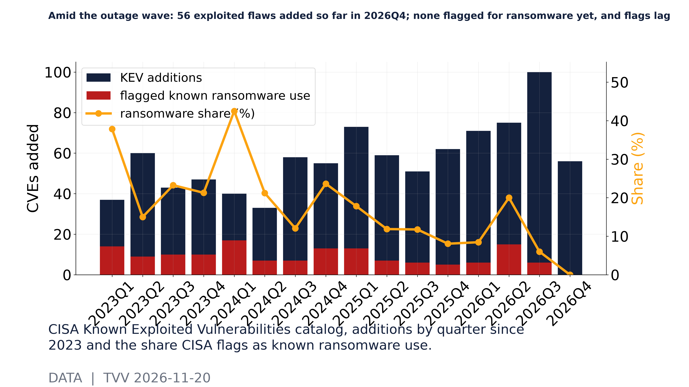
Amid the outage wave: 56 exploited flaws added so far in 2026Q4; none flagged for ransomware yet, and flags lag. CISA Known Exploited Vulnerabilities catalog, additions by quarter since 2023 and the share CISA flags as known ransomware use. [Data; data as of 2026-11-18] Source: cisa.gov data page
3. Earthquakes and Eruptions
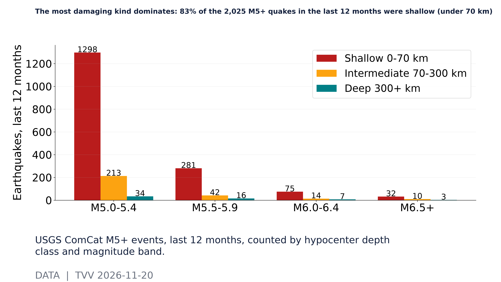
The most damaging kind dominates: 83% of the 2,025 M5+ quakes in the last 12 months were shallow (under 70 km). USGS ComCat M5+ events, last 12 months, counted by hypocenter depth class and magnitude band. [Data; data as of 2026-11-20] Source: earthquake.usgs.gov data page
4. Solar / Space Weather
- ★ Solar cycle 25 is past its peak: the October monthly sunspot number was 46, and NOAA's prediction falls to about 63 (smoothed) by November 2027 (see graph). Researchers report the May 2024 storm briefly left Earth with four radiation belts instead of two, and the House held a space-weather readiness hearing this week. NOAA SWPC · Universe Space Tech · Legis1
- ★ Pole drift and field weakening remain a long-horizon warning: NOAA NCEI tracks the wandering north magnetic pole, but no one can predict the timing of a sudden geomagnetic shift. Michael Hentschel's own view: 2035 at the earliest, with critical earth changes along the way. NOAA NCEI
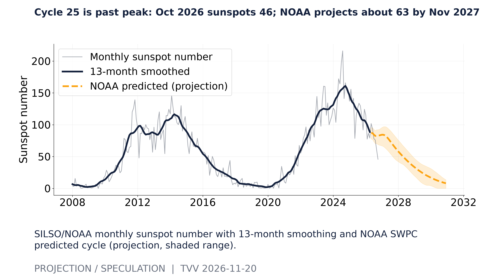
Cycle 25 is past peak: Oct 2026 sunspots 46; NOAA projects about 63 by Nov 2027. SILSO/NOAA monthly sunspot number with 13-month smoothing and NOAA SWPC predicted cycle (projection, shaded range). [Projection/Speculation; data as of 2026-10] Source: services.swpc.noaa.gov data page
5. Critical Infrastructure / Transportation Disruptions
- ★ The US outage wave: Sen. Mark Warner says there is "no evidence this is an AI-generated attack"; he says AI is speeding up vulnerability discovery, forcing rushed patches that can break complex systems, and attributed the FAA ground stop to a failed physical upgrade. The Washington Post explainer reaches the same no-coordination conclusion. WRIC · Washington Post
- ★ Grid stress elsewhere: Cuba's national grid collapsed again, cause unknown; South Australia ordered rooftop solar switched off after a storm cut power to 24,000 properties. In Ukraine, Russian strikes forced nuclear plants to reduce output (see GEO). EnergyNow · Renew Economy
- ★ AI power names sell with the AI trade: GE Vernova was already 36% below its 2026 high before Friday's open, with Vistra, Constellation and Talen also lagging (see graph). Yahoo Finance
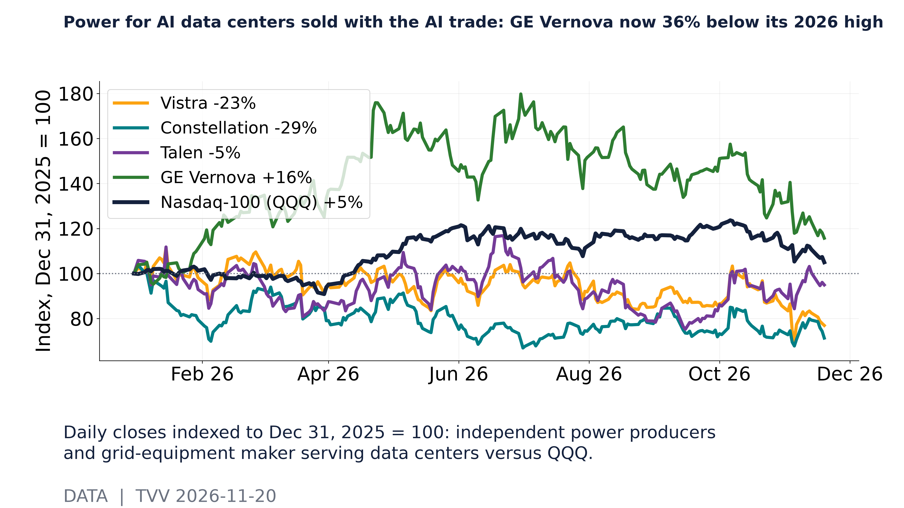
Power for AI data centers sold with the AI trade: GE Vernova now 36% below its 2026 high. Daily closes indexed to Dec 31, 2025 = 100: independent power producers and grid-equipment maker serving data centers versus QQQ. [Data; data as of 2026-11-19] Source: finance.yahoo.com data page
6. Econo-Metrics
- ★ Fed still leaning hawkish into the rout: Philadelphia Fed President Anna Paulson said late Thursday the Fed has "more tightening to do" at a deliberate pace, and Chicago Fed President Austan Goolsbee would not rule out a larger December hike. Barclays strategists say the "bigger challenge for equities is the perception that the Fed put has disappeared," comparing today with December 2018; Citi says markets could price out hikes "if the US equity sell-off should morph into a bursting of the AI bubble." investingLive · Reuters via Investing.com · Reuters via StreetInsider
- ★ Bonds are the one haven working: at about 11:00 AM ET the 10-year Treasury yield was 4.95% (down about 10 basis points on the day) and the 2-year 4.65% (down about 12.6), per Reuters; the 10-year is on course for its biggest weekly fall since April 2025, about 17 basis points. The dollar index slipped to 103.73 after a 19-month high on Thursday (see graph). Reuters via Investing.com · Investing.com · Reuters via StreetInsider
- ★ Jobless claims edged up to 203,000 in the week to Nov 14, a still-resilient labor market; continuing claims jumped by the most since January 2024. Anadolu · RealMoney
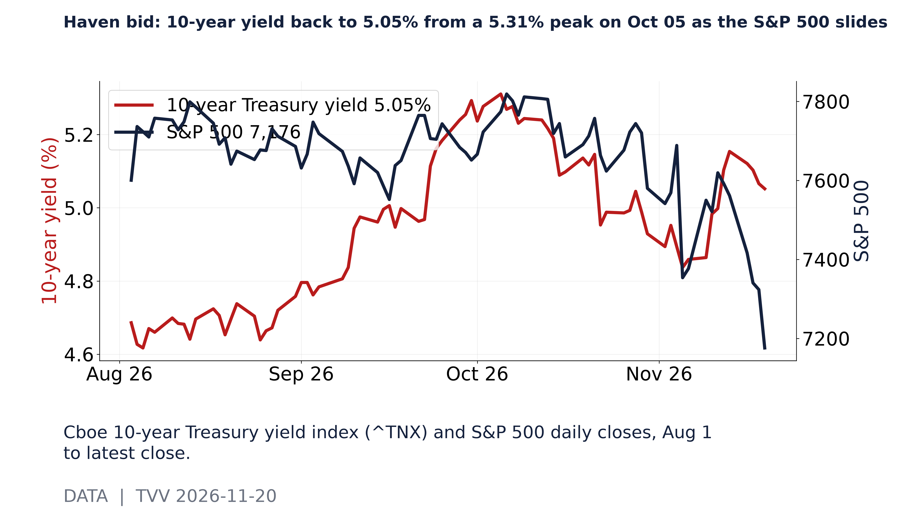
Haven bid: 10-year yield back to 5.05% from a 5.31% peak on Oct 05 as the S&P 500 slides. Cboe 10-year Treasury yield index (^TNX) and S&P 500 daily closes, Aug 1 to latest close. [Data; data as of 2026-11-19] Source: finance.yahoo.com data page
7. Epidemic / Bio-Metrics
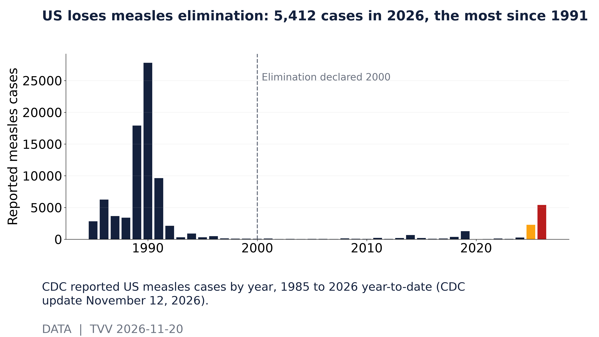
US loses measles elimination: 5,412 cases in 2026, the most since 1991. CDC reported US measles cases by year, 1985 to 2026 year-to-date (CDC update November 12, 2026). [Data; data as of November 12, 2026] Source: cdc.gov data page
8. Gold and Silver and Commodities
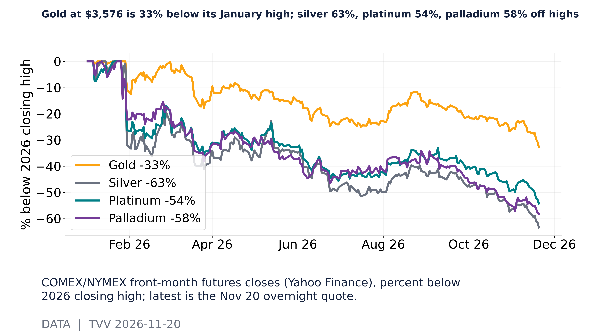
Gold at $3,576 is 33% below its January high; silver 63%, platinum 54%, palladium 58% off highs. COMEX/NYMEX front-month futures closes (Yahoo Finance), percent below 2026 closing high; latest is the Nov 20 overnight quote. [Data; data as of 2026-11-20] Source: finance.yahoo.com data page
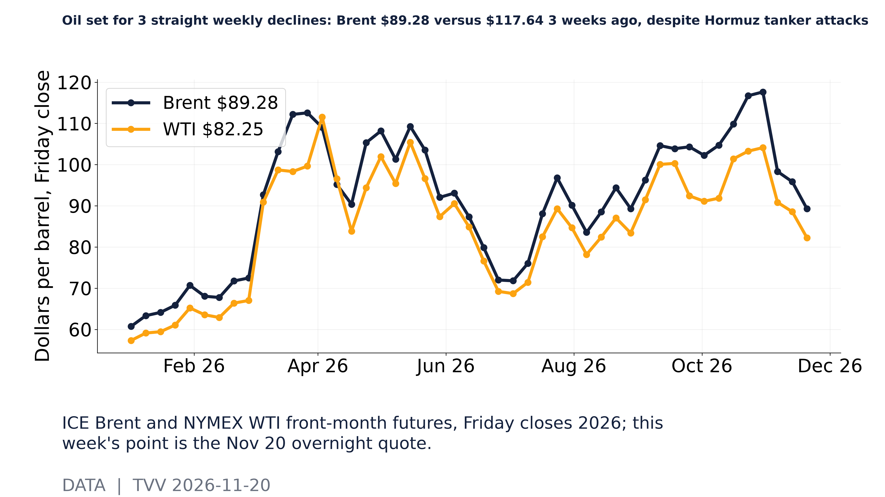
Oil set for 3 straight weekly declines: Brent $89.28 versus $117.64 3 weeks ago, despite Hormuz tanker attacks. ICE Brent and NYMEX WTI front-month futures, Friday closes 2026; this week's point is the Nov 20 overnight quote. [Data; data as of 2026-11-20] Source: finance.yahoo.com data page
9. Stock Averages and Nasdaq Major Movers
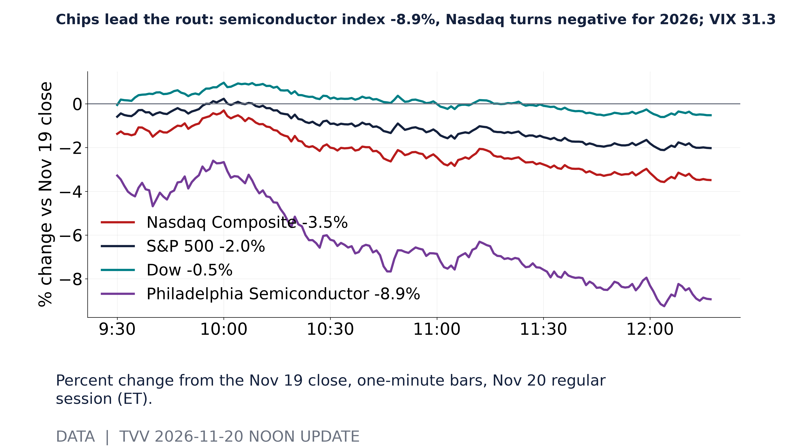
Chips lead the rout: semiconductor index -8.9%, Nasdaq turns negative for 2026; VIX 31.3. Percent change from the Nov 19 close, one-minute bars, Nov 20 regular session (ET). [Data; data as of 2026-11-20 12:17 ET] Source: finance.yahoo.com data page
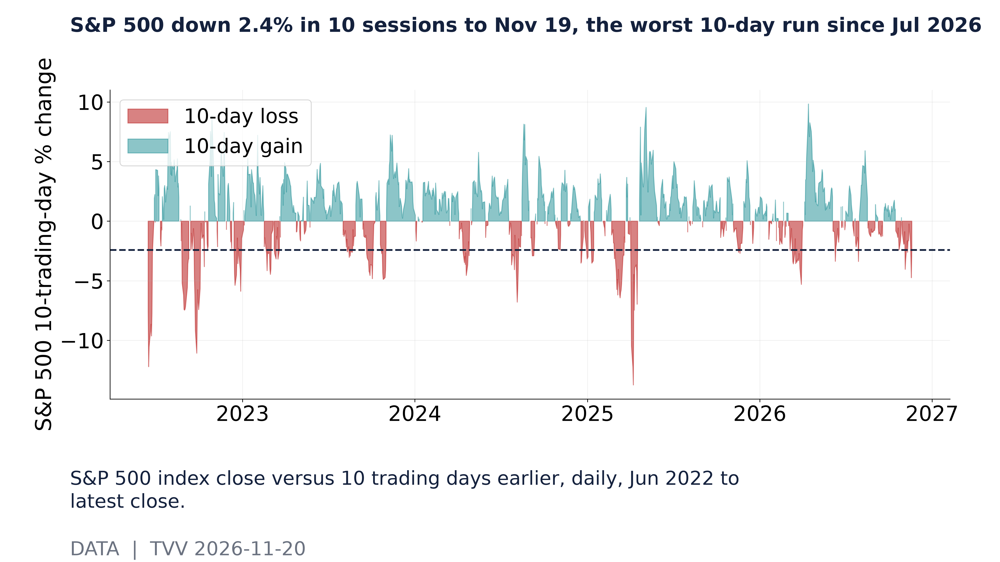
S&P 500 down 2.4% in 10 sessions to Nov 19, the worst 10-day run since Jul 2026. S&P 500 index close versus 10 trading days earlier, daily, Jun 2022 to latest close. [Data; data as of 2026-11-19] Source: finance.yahoo.com data page
10. Polymarket and Kalshi Sentiment Highlights
- ★ The sell-off is chipping at hike bets: at 12:15 PM ET Kalshi priced a 25-basis-point December hike at 88% (91% at the prior settle), no change at 9% (from 4%) and a larger hike at 2% (from 7%). CME FedWatch still showed about 99% for a quarter-point hike early Friday. Bets, not forecasts. Kalshi · CNBC
- ★ Jobs-shock odds: Kalshi prices US unemployment topping 5% before 2030 at about 50% and topping 8% at about 14%, while 2026 strikes sit in low single digits on Kalshi and Polymarket (see graph). Near term, bettors see no 2026 job shock but a coin flip on a 5% rate by 2030. Kalshi · Polymarket
- ★ Ukraine ceasefire odds stay low near term despite the Shenzhen trilateral: 8% by Dec 31 and 56% by mid-2027 on Polymarket (see GEO graph). Polymarket
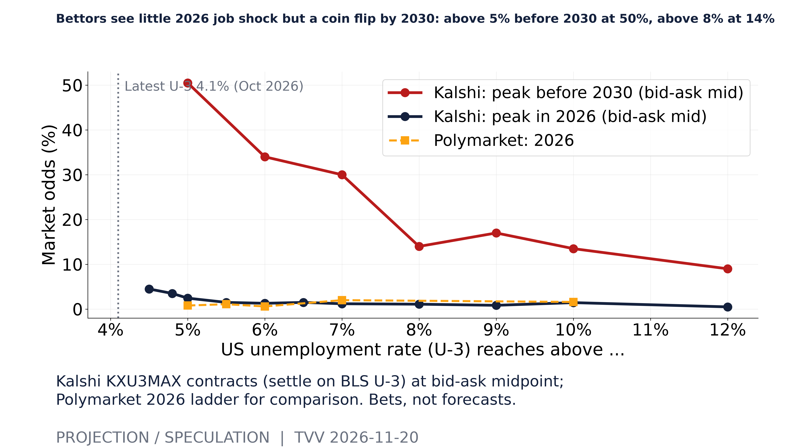
Bettors see little 2026 job shock but a coin flip by 2030: above 5% before 2030 at 50%, above 8% at 14%. Kalshi KXU3MAX contracts (settle on BLS U-3) at bid-ask midpoint; Polymarket 2026 ladder for comparison. Bets, not forecasts. [Projection/Speculation; data as of 2026-11-20 07:47 ET] Source: kalshi.com data page
11. Tech-Metrics
- ★ Nvidia is the epicenter: NVDA traded at $135.32 at about 12:20 PM ET, down 7.3% on the day (Yahoo Finance), its seventh straight decline. That is about 43% below its Oct 6 close of $239.24 (TradingNEWS puts the drop from the peak at 39%, using a different basis), about 13% below its $155.46 close before the Nov 17 earnings report, and about 19% below its $166.19 close on Nov 12, when Jensen Huang's resignation was filed (see graph). Lynx Equity Strategies' KC Rajkumar, whose $135 target he calls Wall Street's lowest, wrote this morning: "Until NVDA stock finds a footing, AI semis go along for a ride downhill, no matter how inexpensive their valuation may become." Today's Data Center Bubble unwind, from memory makers to neoclouds to Anthropic, runs through this one stock. Yahoo Finance · TradingNEWS · Investing.com · TVV Data Center Q9
- ★ Guidance versus reality: on Nov 17 Nvidia beat with $115.8 billion of quarterly revenue (consensus about $109.1 billion), data-center revenue of $107.6 billion, and guided the current quarter to $130 billion plus or minus 3%; interim CEO Colette Kress raised fiscal 2028 growth guidance to 75% from 70%. The stock has fallen every day since. Yahoo Finance's Brian Sozzi blames the succession question after new chairman Harvey Jones left the door open to an extended interim arrangement; Seaport's Jay Goldberg: "I don't know that any internal candidate, though, is capable of running the whole company." The outlook assumes no data-center compute revenue from China. Nvidia · CNBC · Yahoo Finance
- ★ Balance-sheet strain: accounts receivable reached $81.0 billion at Oct 25, more than double January's $38.5 billion, with days sales outstanding up to 64 from 60, which Nvidia attributes to Rubin shipment timing and "extended payment terms on large, multi-quarter agreements with certain investment-grade customers." Inventory rose to $39.7 billion from $31.6 billion a quarter earlier. Supply and capacity commitments jumped to $390 billion from $279 billion, and total future commitments are $518 billion. Hyperscaler capex is flattening at the margin: Alphabet held $195-205 billion, Amazon about $220 billion, Meta narrowed to $135-145 billion, and Microsoft cut to $170 billion from $175 billion. Nvidia CFO commentary (SEC) · Nvidia · CNBC
- ★ The financing loop is the bubble risk: Bernstein's Stacey Rasgon flagged new footnote language that Nvidia's neocloud commitments take effect only if those customers secure financing and "may be reduced or eliminated" otherwise; Morgan Stanley credit analyst Lindsay Tyler cut her deployment forecast to 4 gigawatts from 5 as disclosed neocloud commitments fell to $32 billion from $36 billion. Rajkumar says the proposed $500 billion customer-financing pool with Apollo, Blackstone, BlackRock, Brookfield, Goldman and KKR is "as good as dead" (the WSJ says talks continue); Apollo's Marc Rowan: if Nvidia's guarantor role goes, "access to capital for a large number of neoclouds is going to disappear." JPMorgan keeps Nvidia credit at Underweight on GPU-financing risk. BloombergNEF counts at least $1 trillion of data-center debt maturing within five years (see DERIVATIVES and the TVV Data Center Q9 page). CNBC · Investing.com · Blockspace · BloombergNEF · TVV Data Center Q9
- ★ Bulls and bears, and the bets: bulls after earnings included Goldman Sachs (Buy, $220 target), Bank of America (Buy, $280: the call was "very reassuring"), Morgan Stanley (Overweight, $260) and Barclays (Overweight, $210); skeptics include Bernstein (Market Perform, $200), HSBC (Hold, $170: uncertainty will prevail "until a permanent succession plan is laid out") and Lynx ($135). Polymarket at about noon priced a new permanent Nvidia CEO named by Dec 31 at about 17% and Huang rejoining by Dec 31 at about 5% (bets, not forecasts). On YouTube today, Paper Billions' "Why the AI Bubble Is Finally Popping" (44,000+ views) walks through rising Oracle default-insurance costs and insurers funding data-center debt, while dip-buyers such as Verified Investing's Gareth Soloway call it "all out panic" worth buying. CNBC · CNBC · Polymarket · Polymarket · Paper Billions (YouTube) · Verified Investing (YouTube)
- ★ Anthropic caught in the Nvidia undertow: ANT traded at $84.45 at 12:17 PM ET, down 13.1% from Thursday's $97.17 close and only about 1.7% above the $83 IPO price (Yahoo Finance). It opened more than 9% lower at about $88.17, bounced to about $92.56 before 10 AM, then slid all morning (see graph). The morning low near $84.24 is about 27% below the first-day high of $115.10 reported by Fortune. Seaport's Jay Goldberg (Neutral) flags revenue growth slowing from 144% to 43% quarter over quarter and a first lock-up release about one month after the IPO that "could double the free float"; William Blair rates it Outperform. XTB's Kathleen Brooks calls $83 "the level to watch." Yahoo Finance · The Guardian · Fortune · Benzinga · CNBC
- ★ IPO size settled: Anthropic's closing release (Friday) says it sold 1,127,000,000 Class A shares at $83, including the underwriters' fully exercised 147 million-share option, for about $93.5 billion; with a concurrent $26.0 billion private placement to AMD, Broadcom, Google, Micron, Microsoft, Nvidia and TSMC, total gross proceeds were about $119.5 billion. The $81.3 billion was the 980 million-share base deal, and Bloomberg's $107.3 billion added the private placement. Several of those placement buyers are among Friday's biggest decliners. Anthropic · CNBC · Bloomberg Law · SEC filing
- ★ Other triggers cited: Apple said it is developing its own autonomous AI agent, which Bloomberg TV and XTB flagged as a challenge to Anthropic; AMD, after Hunterbrook's short report on its China ties, was down about 11.8% at 12:17 PM ET (AMD says the claims "misrepresent" its business); and California's attorney general has subpoenaed Nvidia over chip diversion to China. The Guardian · Bloomberg TV (YouTube) · CNBC · CNBC
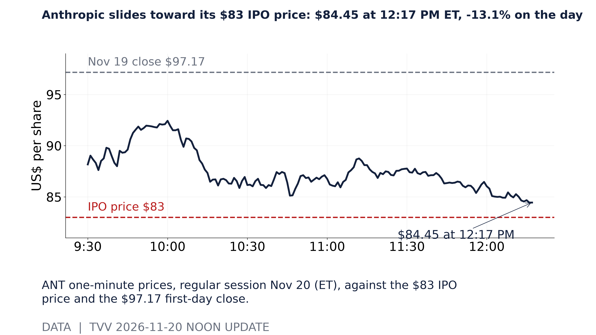
Anthropic slides toward its $83 IPO price: $84.45 at 12:17 PM ET, -13.1% on the day. ANT one-minute prices, regular session Nov 20 (ET), against the $83 IPO price and the $97.17 first-day close. [Data; data as of 2026-11-20 12:17 ET] Source: finance.yahoo.com data page
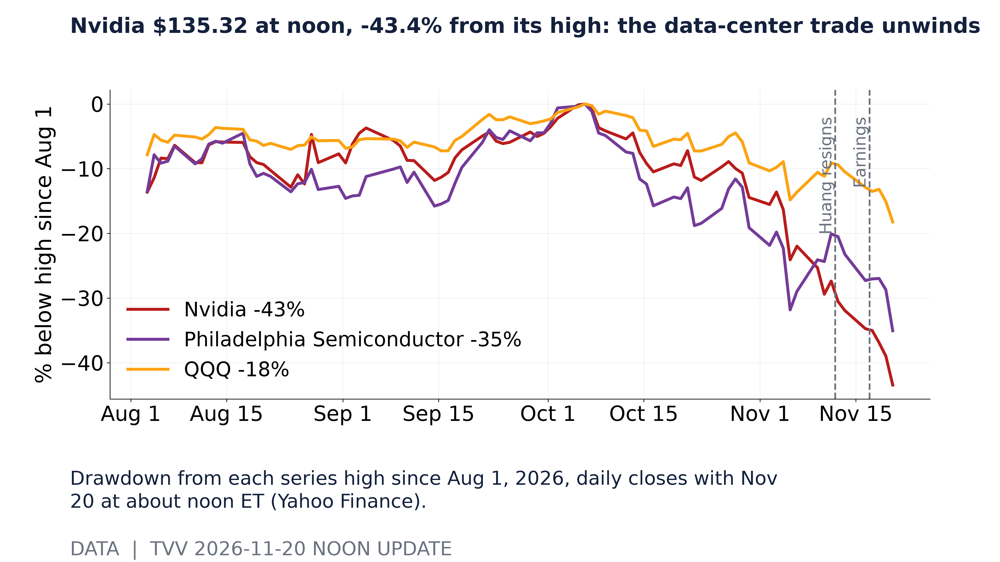
Nvidia $135.32 at noon, -43.4% from its high: the data-center trade unwinds. Drawdown from each series high since Aug 1, 2026, daily closes with Nov 20 at about noon ET (Yahoo Finance). [Data; data as of 2026-11-20 12:21 ET] Source: finance.yahoo.com data page
12. AI Hypergrowth Risks
- ★ AI builders take the beating: at 12:17 PM ET the Philadelphia semiconductor index was down 8.9%, SanDisk 15.3%, Nebius 13.1%, Micron 12.7%, AMD 11.8%, Arm 11.7%, CoreWeave 11.0%, Broadcom 10.7% and Nvidia 7.3%, while Alphabet was up 0.3% and Microsoft down only 1.8% (Yahoo Finance; see graph). Nvidia's own slide is covered under TECHNOLOGY. Strategist Stephen Innes, writing on Investing.com: Wall Street is "increasingly willing to finance the perceived winners while demanding a much harder reckoning from everyone selling them the shovels." Yahoo Finance · TradingNEWS · Investing.com
- ★ Valuation math under question: a Bloomberg Surveillance guest cited research that Anthropic's annual revenue would need to reach about $865 billion by 2030 to justify its valuation ("a number I can't get my head around"), and Seaport estimates Anthropic needs about $900 billion of cash flow to meet its commitments, about $640 billion of it by 2030. Bloomberg TV (YouTube) · Benzinga
- ★ AI turned weapon: the European Commission confirmed an "AI-generated cyber campaign" detected Oct 22 that took down HR, payroll, medical-reimbursement and translation systems for more than 10 days; CERT-EU says the open-source AI pen-testing tool Artex was highly likely involved. It is the EU's first reported AI-tool attack. The Record · Computer Weekly
- ★ Testing the "trades are safe" claim: the Finance Bureau video retelling Palantir CEO Alex Karp says vocational workers and neurodivergent thinkers are safest from AI. BLS data since ChatGPT launched show specialty trade-contractor jobs +5.6% and legal services +6.0%, while computer systems design is -5.2% (see graph). YouTube (Finance Bureau) · BLS via FRED
- ★ Job postings tell a similar story: Indeed's index shows construction at 132 and legal at 126 versus February 2020, but software development at 82 and marketing at 78 (see graph). Legal sitting above baseline does not, on its own, support the claim that junior legal work is vanishing. Indeed Hiring Lab via FRED
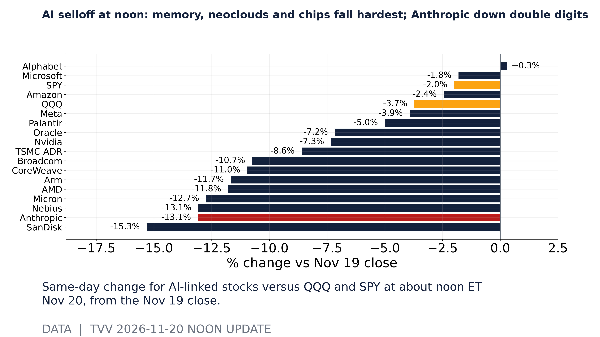
AI selloff at noon: memory, neoclouds and chips fall hardest; Anthropic down double digits. Same-day change for AI-linked stocks versus QQQ and SPY at about noon ET Nov 20, from the Nov 19 close. [Data; data as of 2026-11-20 12:17 ET] Source: finance.yahoo.com data page
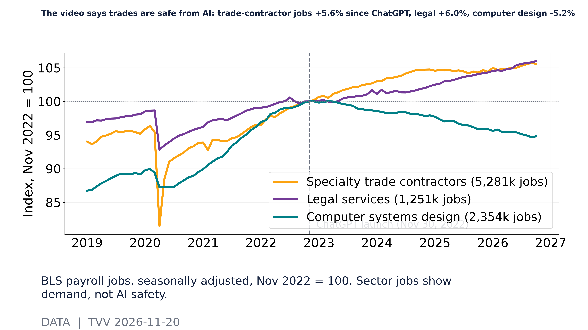
The video says trades are safe from AI: trade-contractor jobs +5.6% since ChatGPT, legal +6.0%, computer design -5.2%. BLS payroll jobs, seasonally adjusted, Nov 2022 = 100. Sector jobs show demand, not AI safety. [Data; data as of 2026-10] Source: fred.stlouisfed.org data page
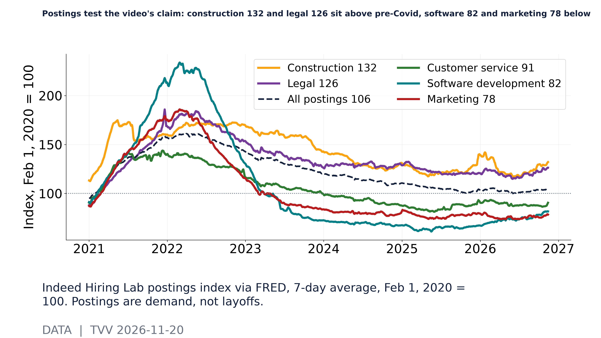
Postings test the video's claim: construction 132 and legal 126 sit above pre-Covid, software 82 and marketing 78 below. Indeed Hiring Lab postings index via FRED, 7-day average, Feb 1, 2020 = 100. Postings are demand, not layoffs. [Data; data as of 2026-11-13] Source: fred.stlouisfed.org data page
13. Finance Bubble Derivatives Risk
- ★ Options plumbing is amplifying the drop: today is monthly options expiration, and dealers hedging large put positions near 7,100 and 7,000 on the S&P 500 can speed selling as the index falls through those strikes (TradingNEWS). Going in, dealers reportedly carried their largest short-gamma exposure since 2019, and Nomura's Charlie McElligott had flagged the collision of Nvidia, Anthropic and expiration (Innes). The VIX was 31.3 at 12:02 PM ET (Yahoo Finance), its highest since late March; Reuters notes 30 is a level that can trigger selling by volatility-targeting funds. Bond volatility (MOVE) remains below last month's highs. TradingNEWS · Investing.com · Reuters via StreetInsider · Yahoo Finance
- ★ Leverage unwinds: the 3x chip ETF SOXL was down 26.7% at $33.21 at 12:17 PM ET and TQQQ about 11%, on top of SOXL's 85% drawdown from its 2026 high going into today (see graphs). Strategist Kenny Polcari warns of investors "forced to sell" on margin calls who "don't care about prices"; Verified Investing's Gareth Soloway says he is a buyer of the "all out panic," a view many of his viewers dispute in the comments. Yahoo Finance · Kenny Polcari (YouTube) · Verified Investing (YouTube)
- ★ Crypto liquidity drain: bitcoin broke below $60,000 for the first time since July (CNBC) and was at $59,240 at 12:17 PM ET (Yahoo Finance). US spot bitcoin ETFs saw more than $580 million of net outflows on Thursday, taking November to about $3.47 billion (CoinDesk, SoSoValue data). Joe Consorti argues holders of bitcoin and gold have been "funding Anthropic's IPO" as the IPO wave drains liquidity (opinion). Credit spreads finished wider across sectors on Thursday (Innes). CNBC · Yahoo Finance · CoinDesk · RE:Bitcoin (YouTube) · Investing.com
- ★ Data-center financing wall: BloombergNEF tallies at least $1.8 trillion raised for data centers from 2020 through mid-2026 (debt, equity and securitizations), with at least $1 trillion of data-center debt maturing within five years. Korea JoongAng Daily reports lenders that bankrolled the boom are pulling back. BloombergNEF · Korea JoongAng Daily · TVV Data Center Q9
- ★ Private-credit liquidity: investors in semi-liquid private-credit funds still face gated redemptions, and Pensions & Investments reports lower return expectations after a year of "confidence" issues. Real Investment Advice · Pensions & Investments
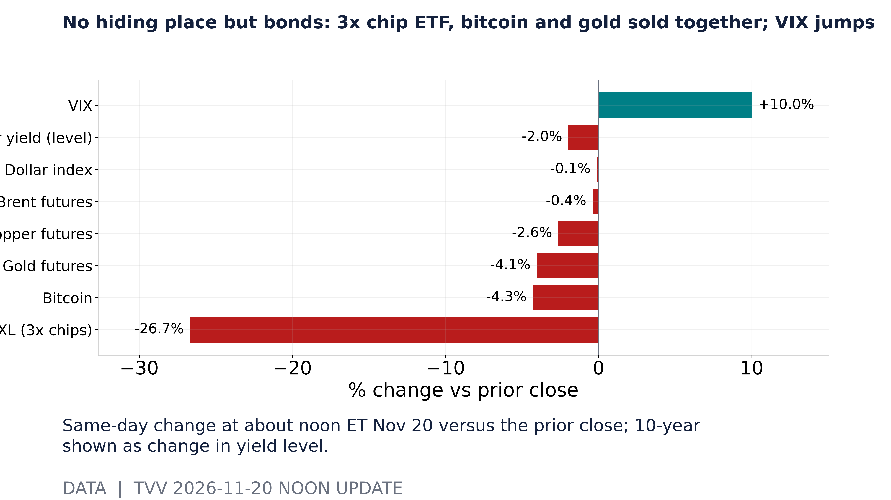
No hiding place but bonds: 3x chip ETF, bitcoin and gold sold together; VIX jumps. Same-day change at about noon ET Nov 20 versus the prior close; 10-year shown as change in yield level. [Data; data as of 2026-11-20 12:17 ET] Source: finance.yahoo.com data page
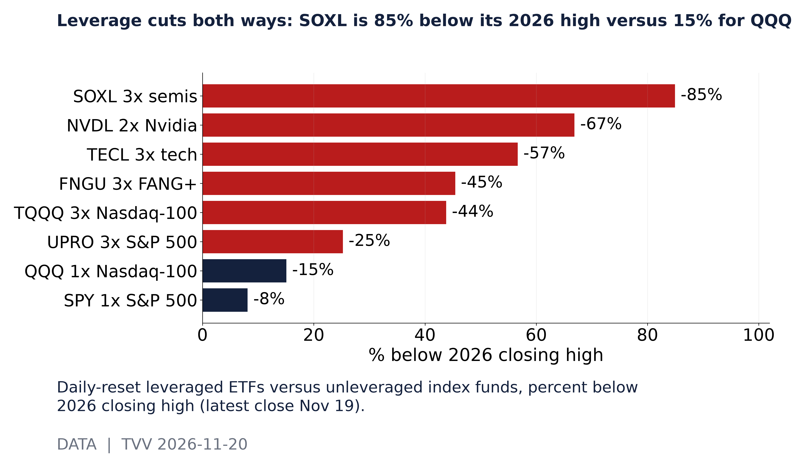
Leverage cuts both ways: SOXL is 85% below its 2026 high versus 15% for QQQ. Daily-reset leveraged ETFs versus unleveraged index funds, percent below 2026 closing high (latest close Nov 19). [Data; data as of 2026-11-19] Source: finance.yahoo.com data page
SUMMARY
Prioritized Risk Summary November 20, 2026
| Sections Ranked for Importance Today | |
|---|---|
| TECHNOLOGY | Nvidia -7% at $135, 43% off peak; Data Center Bubble drags Anthropic back toward $83 IPO |
| STOCKS | S&P 500 slides 2% into correction territory at noon; Nasdaq -3.5% turns negative for 2026 |
| AI “BOOST” | Chip index -9%; SanDisk, Micron, AMD, CoreWeave fall 11-15%; Anthropic -13% |
| DERIVATIVES | Options expiry and short gamma: VIX 31, 3x chip ETF -27%, bitcoin below $60,000 |
| ECONOMY | Bonds the only haven: 10-year near 4.95%; Fed's Paulson still sees more hikes |
| GEOPOLITICS | Russia hits three Kyiv bridges after Shenzhen summit; Iran may test US oil blockade |
| COMMODITY | Gold futures -4% near $3,536; copper heads for worst week since April 2025 |
| PREDICTIONS | Kalshi trims December hike odds to 88%; no-change rises to 9% |
| TERROR | JPMorgan, Visa, Mastercard vendors hacked by n0n extortion group |
| HEALTH | Oregon confirms human H5 bird flu case; DRC Ebola tops 11,500 cases |
| INFRASTRUCT | Warner finds no evidence the US outage wave was an AI attack |
| SPACE | Solar cycle 25 past peak; October sunspots 46 |
| QUAKES | No qualifying deadly M6+ quake since Nov 16 |
TECHVESTVENTURES ACTION-ALERT — November 20, 2026 see all graphs click TVV Risk Center
EDITOR — Michael Hentschel
Most news events require or spawn no action or reaction, some (but not many) are or become warnings. We draw attention to substantial lifestyle risks and market risks in particular, some created by Mid-Term Vote anxieties, Middle East tensions, vast over-indebtedness globally, and other events we track. Longer term but capable of causing sudden power surges as serious as the Carrington Event. Climate instability occasioned by long-term cyclical solar electro-magnetic flares, is becoming much more prominent and even more likely. New AI predictive analytics and pattern seekers are pointed in some of these directions, and we monitor imminent likelihood. Some readers might hedge and others might see opportunity. The above is not investment advice.